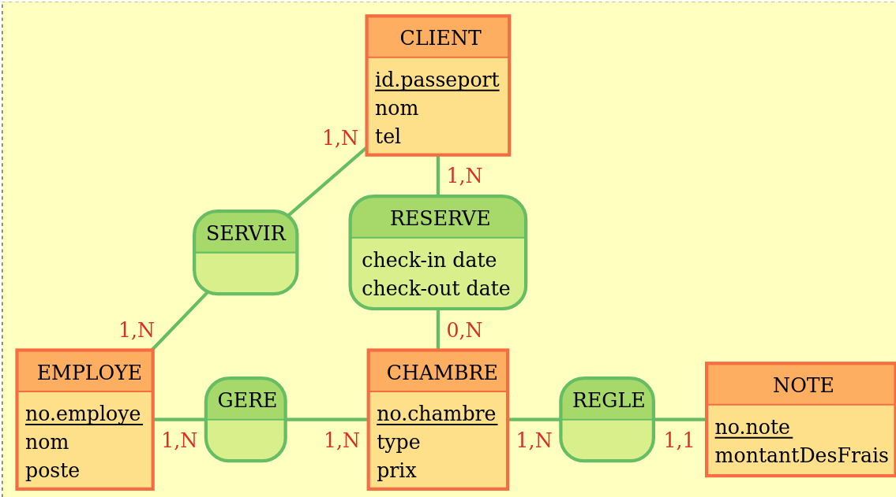
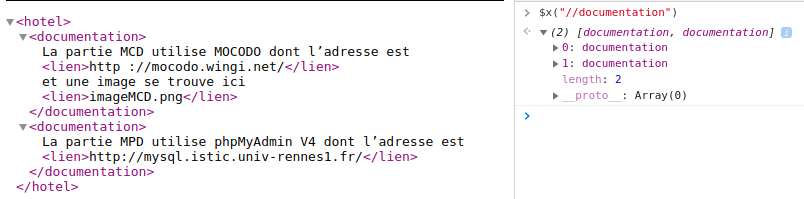
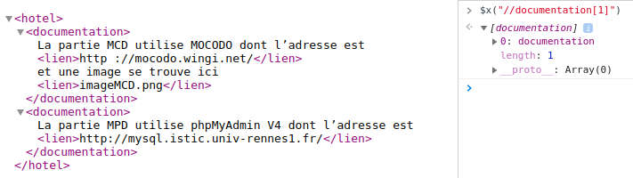
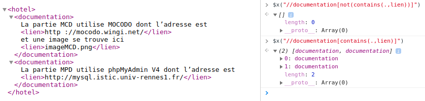
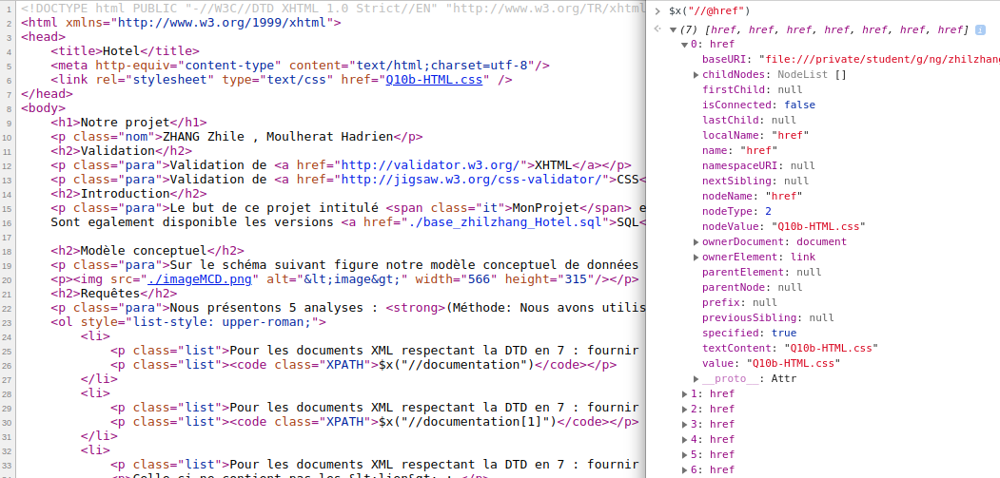

ZHANG Zhile , Moulherat Hadrien
Validation de XHTML
Validation de CSS
Le but de ce projet intitulé Base de donnée hotel est le suivant :
Comprendre l'organisation d'un hotel et crée un modèle fonctionnel qui permette de gerer les differents aspects de l'hotelerie.
Ainsi notre modèle simplifié gère les principaux aspects comme la gestion des clients, des résèrvations ou encore l'affectation des employés a des chambres.
Sont également disponible les versions SQL,XMLa et XMLb(DTD associée).
Sur le schéma suivant figure notre modèle conceptuel de données :

Nous présentons 5 analyses : (Méthode: Nous avons utilisé la console de firefox pour obtenir les résultats XPATH.)
Pour Q8a-XML.xml respectant Q7-DTD2.dtd : fournir les contenus des éléments <documentation>
$x("//documentation")
Pour Q8a-XML.xml respectant Q7-DTD2.dtd : fournir le premier élément <documentation>
$x("//documentation[1]")
Pour Q8a-XML.xml respectant Q7-DTD2.dtd : fournir les éléments <documentation> n’ayant pas d’élément <lien>
Celle-ci ne contient pas les <lien> :
$x("//documentation[not(contains(.,lien))]")
Celle-ci contient les <lien> :
$x("//documentation[contains(.,lien)]")
Pour Q9-HTML.html : fournir les valeurs des attributs href
$x("//@href")
Pour Q9-HTML.html : compter le nombre d’images dans un document XHTML
$x("count(//img)")
| Requêtes | Résultats |
|---|---|
| Requête1 |  |
| Requête2 |  |
| Requête3 |  |
| Requête4 |  |
| Requête5 | |